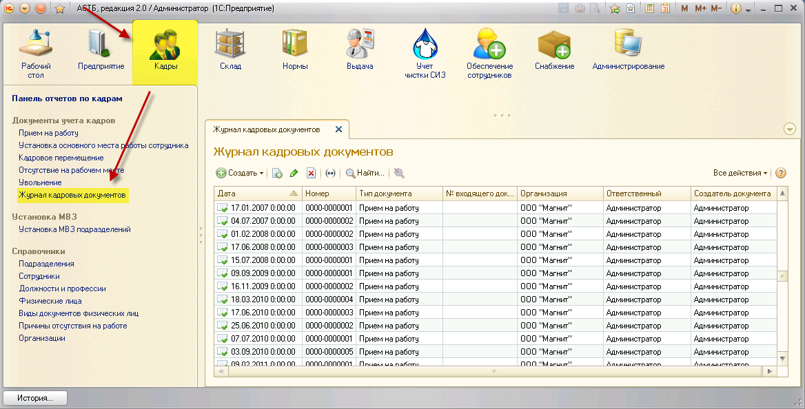
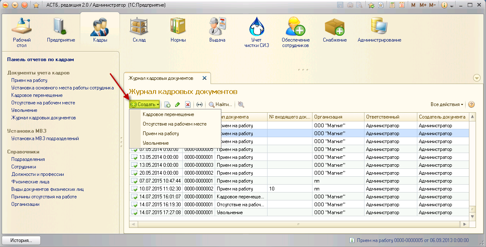
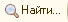

.
.Данный журнал является средством просмотра кадровых документов. В ПК АСТБ представлен в виде таблицы, каждая строка которой содержит кадровый документ (прием на работу, перемещение, увольнение, отсутствие на рабочем месте).
Чтобы просмотреть все документы по произведенным кадровым операциям, зайдите в раздел «Кадры», документ «Журнал кадровых документов».

На рабочей области раздела отобразятся все проведенные и не проведенные кадровые документы всех зарегистрированных организаций. Проведенные документы обозначаются значком .
Данные в таблице можно сортировать по колонкам. Для этого нужно нажать по названию колонки, справа появится значок в виде треугольника  . Для сортировки в обратном порядке следует нажать еще раз по тому же значку.
. Для сортировки в обратном порядке следует нажать еще раз по тому же значку.
Колонка «Тип документа» не подлежит сортировке, так как имеет динамический список.
В разделе «Журнал кадровых документов» можно создавать такие кадровые документы, как «Кадровое перемещение», «Отсутствие на рабочем месте», «Прием на работу» и «Увольнение». Для этого нужно на командной панели раздела нажать кнопку «Создать» и выбрать тип документа.

Командная панель содержит следующие вспомогательные кнопки:
 – Создать новый элемент копированием предыдущего;
– Создать новый элемент копированием предыдущего;
– Изменить (или открыть) текущий элемент;
 – Пометить текущий элемент на удаление;
– Пометить текущий элемент на удаление;
 – Установить период для просмотра;
– Установить период для просмотра;
– Поиск данных в списке;
 – Отменить поиск в списке.
– Отменить поиск в списке.
В журнале кадровых документов также отображается дата окончания договора из документов "Прием на работу" и "Кадровое перемещение". Для работы с документами с истекшей датой окончания, перейдите к обработке "Отмена временного трудоустройства".